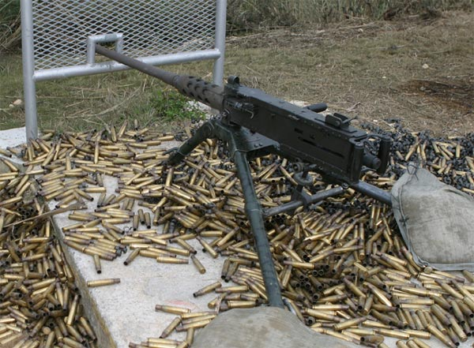

白朗寧M2重機槍

M2重機槍（M2 Machine Gun），俗稱五零／點五零機槍（英語：.50 Caliber Machine Gun，簡稱：.50 Cal），目前美軍使用型號的官方名稱為白朗寧M2HB.50口徑機動式機槍（英語：Browning Machine Gun，Cal. .50， M2HB，Flexible.），是由約翰·白朗寧在一戰後設計的重機槍，發射12.7×99公釐（.50 BMG）大口徑彈藥。
- 白朗寧M2重機槍採用大口徑12.7×99公釐NATO（.50 BMG）彈藥，它有高火力、彈道平穩及射程極遠的優點，450—550發／分鐘（二戰時型號為600—1,200發／分鐘）的射速及後座作用系統令其在全自動射擊時十分穩定，命中率亦較高，但低射速也令M2的支援火力降低。
白朗寧M2發射M2普通彈時的最大射程可達7.4公里（4.55英哩），裝在M3三腳架亦有1.8公里（1.2英哩）的有效射程。白朗寧M2重機槍淨重38公斤（84磅），其M3型三腳架全重20公斤（44磅），V字「蝴蝶型」扳機裝在機匣尾部並附有兩個握把，射手可通過閉鎖或開放槍機來調節全自動或半自動射擊。白朗寧M2用途廣泛，為了對應不同配備，它更可在短時間內改為機匣右方供彈而無需專用工具。
由於發射訓練用途的空包彈時膛壓較低，需要在槍管上以三條特製金屬管安裝空包彈助退器（Blank-firing adapter，BFA），以確保有足夠火藥燃燒氣體來保持自動循環作用。
白朗寧M2在1920年代開始安裝在美軍的飛機、步兵架設的火力陣地與軍用車輛上，（如戰車及裝甲運兵車）等。
白朗寧M2自1921年就開始服役以來，經歴二戰、韓戰、越戰、波斯灣戰爭、2001年阿富汗戰爭及伊拉克戰爭等無數場戰爭與武裝衝突，可說是極為成功的重機槍設計，亦是美軍輕武器中服役時間最長的一種，直到21世紀在各國軍隊中皆有很好的評價，至今仍然是大量國家的制式重機槍，與前蘇聯DShK重機槍同樣為世界最廣泛被使用的兩款重機槍。部份非正規武裝勢力更將其安裝在武裝改裝車上使用。
除了增加快拆槍管以外，白朗寧M2的原始設計幾乎沒有太大更動。此外，該槍亦有多種衍生型，目前由多間廠商所生產，包括比利時FN公司。瑞典、英國、澳洲、韓國及日本等國家亦獲得FN公司授權合法生產M2HB。